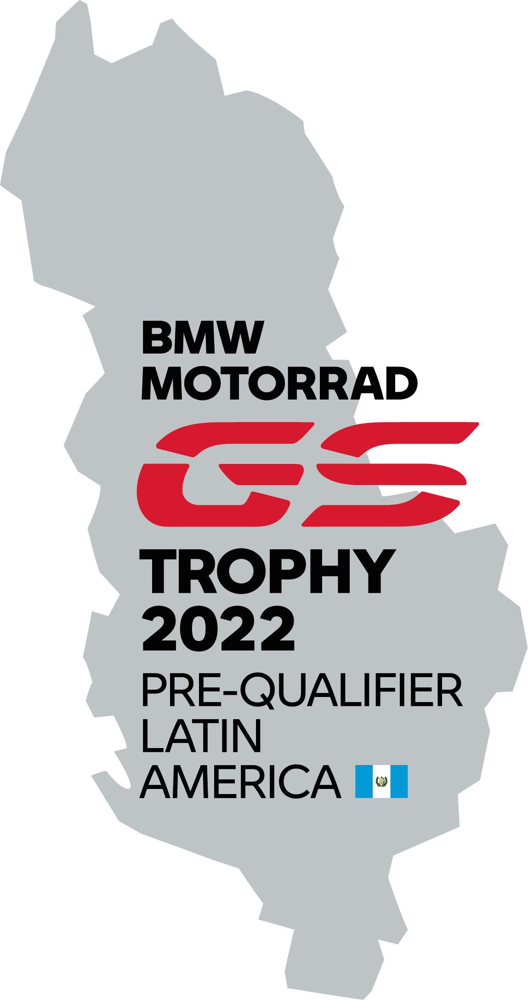

¿Qué es el
GS Trophy?

Son siete días de pura aventura. Siete días, y dos años de preparación. Siete días que cambian la vida. Cada rider puede participar una única vez en el International GS Trophy. Sin embargo, no es una carrera clásica; ya que los exigentes desafíos en los que los participantes demuestran sus conocimientos y habilidades de conducción, tienen que ver tanto con el espíritu como con la habilidad del equipo. Tuvo sus inicios en el año 2008 y hasta la fecha se han celebrado en 7 ocasiones: Túnez | 2008, Sudáfrica | 2010, Sudamérica (Argentina y Chile) | 2012, Norteamérica (Canadá) | 2014, Tailandia | 2016, Mongolia | 2018, Nueva Zelanda | 2020, Albania | 2022
GS Trophy 2021
Qualifier GT
Es el evento más grande del año del mundo GS en Guatemala. Tres días llenos de pruebas, retos técnicos y mucha diversión, donde cada uno de los participantes ponen a prueba sus habilidades de manejo, así como el compañerismo que representa a la comunidad de motoristas Off-road en busca de uno de los 3 lugares para representar a Guatemala en el GS Trophy Qualifier Regional y así poder competir por formar parte del equipo latinoamericano en el GS Trophy 2022 a realizarse en Albania.
Reglamento
Propiedad de la moto
1) El evento es exclusivo para propietarios de motos BMW GS. Debe de demostrarse la propiedad de la misma por medio de la tarjeta de circulación. 2) En el caso de motos a nombre de empresas deberá de presentarse el caso y las constancias de pago a la organización para su aprobación. 3) Se autoriza el uso de motos en primer grado sanguíneo. ( Padre e hijo ) 4) No se puede participar en motos prestadas o traspasadas temporalmente de forma fraudulenta lo cual da lugar a DESCALIFICACIÓN.

1
Propiedad de la moto
2
Pilotos
3
repetición de participación
4
conducta
5
reclamos
6
acompañantes